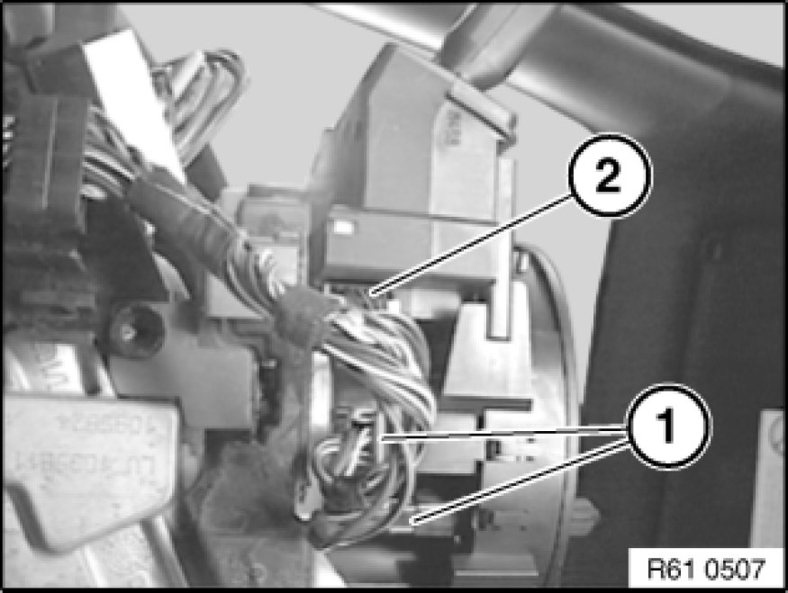

Removing and Installing/Replacing Fixture for Steering Column Stalk
61 31 005 - Removing and installing/replacing fixture for steering column stalk

Warning!
Move wheels into straight-ahead position and do not alter this position during the repair work.
With steering wheel removed, do not under any circumstances turn/twist fixture for steering column stalk!

Necessary preliminary tasks:
- Remove steering wheel
- Remove lower section of steering column trim Removing and Installing/Replacing Lower Section of Steering Column Trim
- Remove top section of steering column casing Replacing Upper Section of Steering Column Trim.
Disconnect plug connections (1) at turn indicator/dimmer stalk and stalk for windshield wipers.

Disconnect plug connection (1) at fixture for steering column stalk.
If necessary, disconnect plug connection (2) at stalk for steering column adjustment.
Release screws (1).
Remove fixture for steering column stalk (2).
Warning!
When removed, the cover (1) of the fixture for the steering column stalk (2) is secured against turning/twisting by the lock (3).
Do not under any circumstances twist the cover (1) out of its centered position against the fixture for the steering column stalk (2).

Unlock clips and pull out stalk for windshield wipers (1).
Note:
If necessary, remove steering column adjustment stalk (2).
Raise lock in direction of arrow and pull out stalk for steering column adjustment (2) in direction of arrow.
Unlock clips and pull out turn indicator/dimmer stalk (3) towards top.